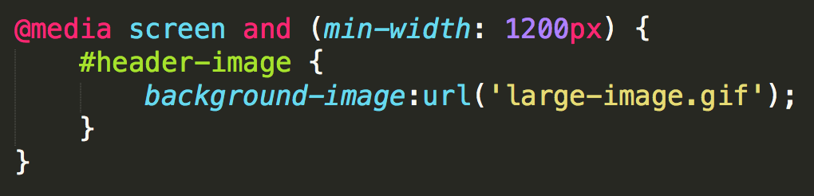
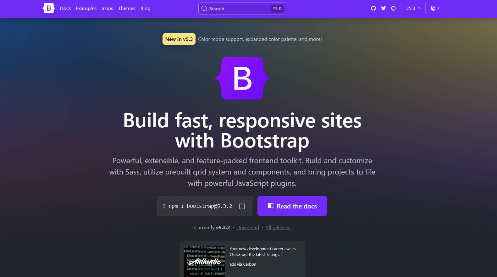

3
2
1
0
the names of CSS properties that should be transitioned
.example1 { transition-property: background-color; }
set to all to transition all CSS properties
.example2 { transition-property: all; }
the number of seconds or milliseconds a transition animation should take to complete
.example1 { transition-duration: 2s; }
delay transitions from the moment a trigger happens
.example1 { transition-delay: 0s; }
.example2 { transition-delay: 1s; }
.example3 { transition-delay: 2s; }
.example4 { transition-delay: 3s; }determines how intermediate values are calculated
.example { transition-timing-function: ease; }Lucky for us, someone has created a tool that makes our lives easier.
Pick a transition property and apply it to an element.
Hint: The transition will only work if it has a pseudo class, like :hover
scales the element
transform: scale(sx[, sy]);
rotates the element degrees around its origin
transform: rotate(angle);
move element using x and y coordinates
transform: translate(ax[, ay]);
the x and y origin for transformation
transform-origin: x-offset y-offset;
Pick a transform property and apply it to an element.
Hint: The transforms, like transitions, will only work if the element has a pseudo class, like :hover
Extra Credit: Use it with transition to make the transform smoother.
RWD is a design approach that suggests that the design & development of a site shoud respond to the user's behavior and environment.

RWD modifies the presentation of a site, without modifying the content of the page. So no matter what, every user has access to the same information.

With fixed-width sites, we have to adjust the height and width of elements manually.
With fluid grids, the height and width of elements is dependent upon the device resolution.
Text scales easily on smaller devices, but images are a bit tricky.
Images will overflow their container elements if they're too big for them.
That's annoying.
By using max-width on images, they will only expand to the size of their parent.
If their parent has no width, it will just expand to the width of the viewport.
img {
max-width: 100%;
}Media queries apply certain CSS in certain situations.
They will overwrite previous styles because they are last in the cascade.


For devices that have dimensions no smaller than 320px and are not larger than 480px
/* Smartphones (portrait and landscape) */
@media only screen and (min-device-width : 320px)
and (max-device-width : 480px) {
/* Styles */
}iPad dimensions with the orientation in landscape.
/* iPads (landscape) ----------- */
@media only screen and (min-device-width : 768px)
and (max-device-width : 1024px)
and (orientation : landscape) {
/* Styles */
}Rather than looking for a type of device, they look at the capability of the device. You can use them to check for all sorts of things.
By designing sites with mobile first in mind, it makes scaling them down a lot easier.
Mobile first allows us to simplify the user flow to its basic elements and then enhance it as the screen size increases.

Use this to control the size of the viewport.
<meta name="viewport" content="width=device-width,
user-scalable=true;">Width=device-width makes the viewport the size of the device.
User-scalable=true allows the user to pinch and zoom on your site.
Let's take a look at our site now on a phone (or you can resize your browser), and find ways to improve it.
Add the viewport meta tag to the html.
Use media queries to shift elements around on the page and to increase legibilty.
Download a pre-built framework that has basic styles already set up.
By far the most popular front-end framework out there.
These are two very popular CSS preprocessors
CSS preprocessors take code written in the preprocessed language and then convert that code into the same old css we’ve been writing for years.
Since we're not writing straight CSS, we're not limited to the restrictions of the language.
Mixins!
/* LESS */ .rounded-corners (@radius: 5px) {
-webkit-border-radius: @radius;
-moz-border-radius: @radius;
-ms-border-radius: @radius;
-o-border-radius: @radius;
border-radius: @radius;
}
#footer {
.rounded-corners(10px);
}
/* Compiled CSS read by the browser */
#footer {
-webkit-border-radius: 10px;
-moz-border-radius: 10px;
-ms-border-radius: 10px;
-o-border-radius: 10px;
border-radius: 10px;
}// LESS
#header {
h1 {
font-size: 26px;
font-weight: bold;
}
p { font-size: 12px;
a { text-decoration: none;
&:hover { border-width: 1px }
}
}
}/* Compiled CSS */
#header h1 {font-size: 26px;font-weight: bold;}
#header p {font-size: 12px;}
#header p a {text-decoration: none;}
#header p a:hover {border-width: 1px;}LESS
p {
color: lighten(@base, 5%);
}SASS
p {
color: hsl($hue: 0, $saturation: 100%, $lightness: 50%);
}LESS
// LESS
@blue: #199FD9;
p {
color: @blue;
}
// Compiled CSS
p {
color: #199FD9;
}SASS
// SASS
$blue: #199FD9;
p {
color: $blue;
}
// Compiled CSS
p {
color: #199FD9;
}